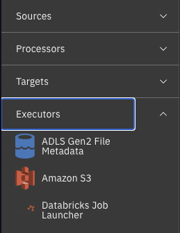
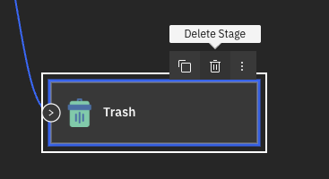
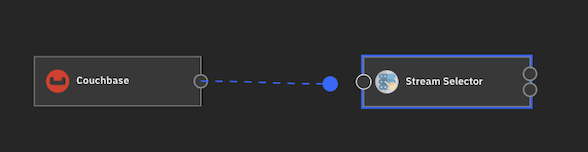
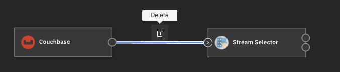

Stages#
A stage is a part of a flow that is responsible for processing the flow’s data in a single, simple way. By connecting multiple stages together, you can perform more complex tasks.
- The SDK provides many ways to interact with a flow and its stages:
Listing all the stages in a flow
Adding a stage to a flow
Removing a stage from a flow
Connecting stages
Connecting to Specific Output Streams
Listing all the stages connected to a stage
Disconnecting stages
Chaining stage connect and disconnect operations
Editing a stage’s configuration
Listing all Stages in a Flow#
To list all the stages in a flow, you can use the StreamingFlow.stages property.
This returns a list of Stage instances.
>>> flow.stages
[DevRawDataSource_01(stage_name='Dev Raw Data Source 1'), Trash_01(stage_name='Trash 1')]
Discovering Available Stages#
Before adding stages to a flow, you can discover what stages are available using the StreamingFlow.available_stages property.
This property returns a SeekableList of StreamingStageInfo objects containing information about each available stage.
You can filter the results using the get() or get_all() methods.
>>> from ibm_watsonx_data_integration.services.streamsets.models.flow_model import StageType
>>>
>>> # Get all available stages
>>> all_stages = flow.available_stages
>>> len(all_stages)
245
>>> # Get a specific stage by label
>>> dev_gen = flow.available_stages.get(label="Dev Data Generator")
>>> print(f"{dev_gen.label} - {dev_gen.description}")
Dev Data Generator - Generates records with the specified field names based on the selected data types
>>> # Get only origin stages using StageType enum
>>> origins = flow.available_stages.get_all(stage_type=StageType.SOURCE)
>>> for stage in origins[:3]:
... print(f"{stage.label} - {stage.description}")
Dev Data Generator - Generates records with the specified field names based on the selected data types
Dev Raw Data Source - Generates records based on the configured raw data
JDBC Query Consumer - Reads database data using a user-provided SQL query
>>> # Get stages from a specific library
>>> jdbc_stages = flow.available_stages.get_all(library="streamsets-datacollector-jdbc-lib")
- Each
StreamingStageInfoobject contains the following: name- Internal stage identifierlabel- Human-readable display namestage_type- Stage type asStageTypeenum (SOURCE, TARGET, PROCESSOR, EXECUTOR)library- Library identifierlibrary_label- Human-readable library namedescription- Stage descriptionversion- Stage versionconfig_definitions-SeekableListofStreamingStageConfigDefinitionobjects describing configurable properties
Note
The StageType enum has four values: SOURCE, PROCESSOR, EXECUTOR, and TARGET.
Discovering Stage Configuration Properties#
Each stage has configurable properties that can be discovered before adding the stage to a flow. The StreamingStageInfo.config_definitions property returns a SeekableList of StreamingStageConfigDefinition objects.
- Each
StreamingStageConfigDefinitioncontains the following: name- Configuration property nametype- Configuration property type (e.g., STRING, BOOLEAN, NUMBER)required- Whether the property is requireddefault- Default value for the propertydescription- Description of what the property doesaccepted_values- List of accepted values (for enum-type properties)
You can use the get() and get_all() methods to filter configuration properties.
Note
The following examples show illustrative values. Actual configuration properties, their names, types, and default values will vary depending on the stage and its version.
>>> # Get a stage's configuration definitions
>>> dev_gen = flow.available_stages.get(label="Dev Data Generator")
>>> config_defs = dev_gen.config_definitions
>>> len(config_defs)
15
>>> # Find a specific configuration property
>>> batch_size_config = config_defs.get(name="batchSize")
>>> print(f"{batch_size_config.name}: {batch_size_config.description}")
batchSize: Number of records to be included in each batch
>>> print(f"Type: {batch_size_config.type}, Required: {batch_size_config.required}")
Type: NUMBER, Required: False
>>> print(f"Default: {batch_size_config.default}")
Default: 1000
>>> # Get all required configuration properties
>>> required_configs = config_defs.get_all(required=True)
>>> for config in required_configs:
... print(f"- {config.name}: {config.description}")
- dataGenConfigs: Data Generator Configurations
>>> # Get all optional configuration properties
>>> optional_configs = config_defs.get_all(required=False)
>>> print(f"Found {len(optional_configs)} optional properties")
Found 14 optional properties
This is particularly useful when you need to understand what properties are available before configuring a stage, or when building dynamic configuration interfaces.
Adding a Stage to a Flow#
To add stages to a flow in the UI, open the dropdown menu on the left side of the flow edit page and select the stage you want to add.
{kind=link}

In the SDK, you can use the StreamingFlow.add_stage() method.
This method accepts the following parameters: label, name, type, library, and stage_info.
This method returns an instance of Stage representing the newly created stage.
After adding stages, you need to call the Project.update_flow() method to save the changes.
Method 1: Using label (traditional approach)
>>> flow.add_stage(label='Amazon SQS Consumer')
AmazonSQSConsumer_01(stage_name='Amazon SQS Consumer 1')
>>> project.update_flow(flow)
<Response [200]>
Method 2: Using StreamingStageInfo from available_stages
>>> from ibm_watsonx_data_integration.services.streamsets.models.flow_model import StageType
>>>
>>> # Discover available stages
>>> origins = flow.available_stages.get_all(stage_type=StageType.SOURCE)
>>>
>>> # Find the stage you want using get()
>>> jdbc_consumer = flow.available_stages.get(label="JDBC Query Consumer")
>>>
>>> # Add it using stage_info
>>> stage = flow.add_stage(stage_info=jdbc_consumer)
>>> project.update_flow(flow)
<Response [200]>
You can use the type parameter to narrow down the type of stage that is returned when multiple stages share the same label.
For example, Amazon S3 can be of type origin, executor or destination.
The StreamingFlow.add_stage() method
returns the first possible stage matching the conditions, therefore it is advisable to narrow down your possibilities by always specifying type or using stage_info.
Remove a Stage from a Flow#
To remove a stage in the UI, click the stage and then click the delete icon that appears above it.
{kind=link}

In the SDK, you can remove a stage from a flow by using the StreamingFlow.remove_stage() method
and passing an instance of Stage to it.
All stages connected to this stage will be disconnected by this action.
This method does not return anything.
After removing stages, you need to call the Project.update_flow() method to save the changes.
>>> amazon_sqs_consumer = next(filter(lambda stage: stage.instance_name == 'AmazonSQSConsumer_01', flow.stages))
>>> flow.remove_stage(amazon_sqs_consumer)
>>> project.update_flow(flow)
<Response [200]>
Connecting Stages#
In the UI, to connect stages, click the output of one stage and drag it to another stage.
{kind=link}

- In the SDK, to connect streaming stages to each other, you can use the following methods:
Stage.connect_output_to()- connect the output of the current stage to the input of another stage.Stage.connect_input_to()- connect the input of the current stage to the output of another stage.Stage.connect_event_to()- connect the event output of the current stage to the input of another stage.
For all the methods listed above, we can pass one or more instances of Stage as parameters to connect the stages.
>>> dev_random_source = flow.add_stage('Dev Raw Data Source') # a sample origin stage that generates random data
>>> trash = flow.add_stage('Trash') # a sample destination stage that accepts all input and discards it
>>> dev_random_source.connect_output_to(trash) # alternatively, you can call: trash.connect_input_to(dev_random_source)
Trash_02(stage_name='Trash 2')
>>> # events are connected in a similar way
>>> pipeline_finisher = flow.add_stage('Pipeline Finisher Executor')
>>> dev_random_source.connect_event_to(pipeline_finisher) # outputs events to pipeline finisher
PipelineFinisherExecutor_01(stage_name='Pipeline Finisher Executor 1')
>>> project.update_flow(flow)
<Response [200]>
Connecting Stages with Multiple Outputs#
Some stages support multiple outputs determined by predicates. Predicates allow you to route data to different output lanes based on specific conditions.
For stages that support predicates, you can modify the predicates attribute to control the number of outputs.
This allows you to connect the stage to multiple downstream stages, with each connection routing data based on a specific predicate condition.
The following examples demonstrate how to work with predicates using the Stream Selector stage, but the same approach applies to any stage that supports predicates.
You can view the predicates of a stage that supports them using the StageWithPredicates.predicates property.
>>> stream_selector = flow.add_stage('Stream Selector')
>>> stream_selector.predicates
[{'outputLane': 'StreamSelector_01OutputLane...', 'predicate': 'default'}]
By default, stages with predicate support have only a single default predicate. You can add more predicates to suit your needs
by using the StageWithPredicates.add_predicates() method.
This method accepts a list of str containing the predicate expressions you want to add.
>>> stream_selector.add_predicates(['${record:value("/expense") >= 10000}', '${record:value("/expense") < -10000}'])
>>> stream_selector.predicates
[{'outputLane': 'StreamSelector_01OutputLane...', 'predicate': '${record:value("/expense") < -10000}'}, {'outputLane': 'StreamSelector_01OutputLane...', 'predicate': '${record:value("/expense") >= 10000}'}, {'outputLane': 'StreamSelector_01OutputLane...', 'predicate': 'default'}]
To remove a predicate, pass it to the StageWithPredicates.remove_predicate() method.
>>> stream_selector.remove_predicate(stream_selector.predicates[0])
>>> stream_selector.predicates
[{'outputLane': 'StreamSelector_01OutputLane...', 'predicate': '${record:value("/expense") >= 10000}'}, {'outputLane': 'StreamSelector_01OutputLane...', 'predicate': 'default'}]
To connect a stage with a specific predicate, use the predicate parameter in the Stage.connect_output_to()
or Stage.connect_input_to() methods.
>>> stream_selector.connect_output_to(trash, predicate=stream_selector.predicates[0])
Trash_02(stage_name='Trash 2')
>>> # alternatively, you can use:
>>> trash.connect_input_to(stream_selector, predicate=stream_selector.predicates[0])
StreamSelector_01(stage_name='Stream Selector 1')
Important
The predicates attribute is an ordered Python list.
The index of a predicate is determined solely by its position in this list (0-based indexing).
The default predicate is always the last element in the list.
The value inside the predicate expression (for example ${1 == 1}) does not determine its index.
For example:
>>> stream_selector.predicates
[
{
'outputLane': 'StreamSelector_01OutputLane...',
'predicate': '${1 == 1}'
}, # index 0
{
'outputLane': 'StreamSelector_01OutputLane...',
'predicate': 'default'
} # index 1 (always last)
]
In this case:
stream_selector.predicates[0]corresponds to the first output lanestream_selector.predicates[1]corresponds to thedefaultlane
When connecting stages, the predicate index must match the position in the list:
>>> stream_selector.connect_output_to(trash, predicate=stream_selector.predicates[0])
>>> stream_selector.connect_output_to(processor, predicate=stream_selector.predicates[1])
default cannot be used as an index value. It is simply the last element in the predicates list.
Connecting to Specific Output Streams#
Some stages produce multiple output streams (not to be confused with predicates).
For example, certain processor stages may have multiple output lanes numbered 0, 1, 2, etc.
You can connect to a specific output stream using the output_idx parameter.
Note
Predicates are used to modify the number of outputs for specific stages like Stream Selector.
Output streams are the actual outputs that can be connected to other stages.
>>> # Example: A stage with multiple output streams
>>> record_deduplicator_stage = flow.add_stage('Record Deduplicator')
>>> renamer = flow.add_stage('Field Renamer')
>>> trash_stage = flow.add_stage('Trash')
>>>
>>> # Get number of output streams
>>> len(record_deduplicator_stage.output_lanes)
2
>>>
>>> # Connect to the first output stream (index 0)
>>> record_deduplicator_stage.connect_output_to(renamer, output_idx=0)
FieldRenamer_01(stage_name='Field Renamer 1')
>>>
>>> # Connect to the second output stream (index 1)
>>> record_deduplicator_stage.connect_output_to(trash_stage, output_idx=1)
Trash_03(stage_name='Trash 3')
Note
The output_idx parameter is zero-based. If not specified, it defaults to 0 (the first output stream).
Listing all Stages Connected to a Stage#
There are three ways a stage can be connected to another stage: it can output data to another stage, it can output event data to another stage, or it can receive input data from a stage.
- There are three properties of a
Stageinstance for each of these types of connections: Stage.inputs- all the stages that input data into the current stage.Stage.outputs- all the stages that the current stage outputs to.Stage.events- all the stages that the current stage outputs its events to.
All three properties return a list of Stage instances.
>>> dev_random_source.outputs
[Trash_02(stage_name='Trash 2')]
>>> dev_random_source.events
[PipelineFinisherExecutor_01(stage_name='Pipeline Finisher Executor 1')]
>>> trash.inputs
[DevRawDataSource_02(stage_name='Dev Raw Data Source 2'), StreamSelector_01(stage_name='Stream Selector 1')]
Disconnecting Stages#
In the UI, to disconnect a stage, you can click on the connection and then the delete icon that comes above it.
{kind=link}

- To disconnect stages, we have a similar trio of methods as for connecting:
Stage.disconnect_output_from()- disconnect the output of the current stage from the input of another stage.Stage.disconnect_input_from()- disconnect the input of the current stage from the output of another stage.Stage.disconnect_event_from()- disconnect the event output of the current stage from the input of another stage.
>>> dev_random_source.disconnect_output_from(trash) # alternatively, you can call: trash.disconnect_input_from(dev_random_source)
Trash_02(stage_name='Trash 2')
>>> dev_random_source.disconnect_event_from(pipeline_finisher)
PipelineFinisherExecutor_01(stage_name='Pipeline Finisher Executor 1')
Chaining Stage’s Connect and Disconnect Operations#
Instead of connecting each stage one by one, it is possible to write everything in a single line of code by using chaining:
>>> source = flow.add_stage('Dev Data Generator')
>>> processor = flow.add_stage('Field Remover')
>>> trash = flow.add_stage('Trash')
>>> source.connect_output_to(processor).connect_output_to(trash)
Trash_04(stage_name='Trash 4')
It is also possible to connect multiple stages to the output of a stage with a single call.
>>> source = flow.add_stage('Dev Data Generator')
>>> renamer1 = flow.add_stage('Field Renamer')
>>> renamer2 = flow.add_stage('Field Renamer')
>>> source.connect_output_to(renamer1, renamer2)
[FieldRenamer_02(stage_name='Field Renamer 2'), FieldRenamer_03(stage_name='Field Renamer 3')]
Editing a Stage’s Configuration#
All stages have properties that can be configured.
You can edit a stage’s configuration through the Stage.configuration property.
This property returns a Configuration object that encapsulates a stage’s configuration.
You can print the configuration and edit it similarly to a dict.
>>> dev_random_source.configuration['stop_after_first_batch']
False
>>> dev_random_source.configuration['stop_after_first_batch'] = True